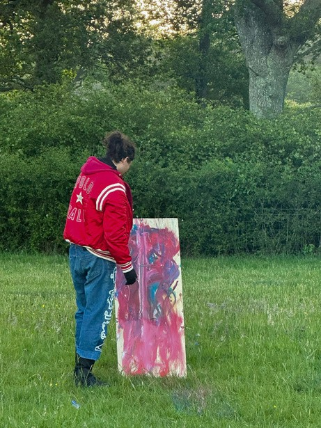
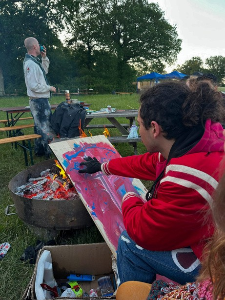
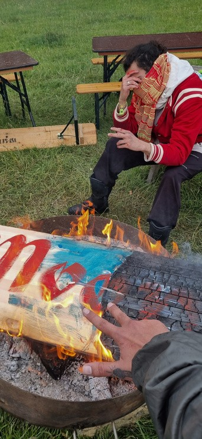
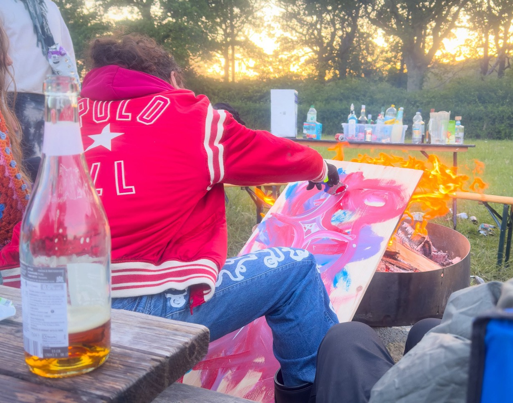

MOOWS / Issue 01 · August 2026
I need a canvas right now!
A short story based on the impermanence of life. And what has become of the old deck rack from the Mooncows DJ setup.

English
After an intense dance at the festival, an inner fire consumed me. My hands flowed on their own, demanding to create. I asked Lucy and everyone else: "I need a painting!"
I received paints, but no canvas. So, I took a rectangular piece of wood. Moved by this passion, I sat near the bonfire and, without realizing it, rested the board on it. I began to draw: eyes (the portal of the soul), fire (the yearning for flow and life), stars and crosses (the affection for others). I felt complete.
Suddenly, I noticed flames emanating from my painting. The bonfire consumed it. I smiled. The external fire reflected what was boiling in my chest. Turning the wood over, I saw that the charcoal had formed patterns of eyes. I understood: we are part of a single collective observer.
I painted pupils in each mark. Feeling liberated, I threw the painting near the water and grounded my body, knowing that this burning would purify my soil for a new blossoming.
The wood turned to ash, while my chaos turned to clarity. It was pure alchemy
I took a cold shower under the tap, returned to the heat of the fire in just my underwear, and finally surrendered the painting to the flames. I noticed "Moon" written on the back. The flame showed me how alchemy can change patterns and emotions.
Only later did I discover that my art had burned the Mooncow DJ deck table!
The moment I discovered that the surfboard was actually a vital part of the DJ deck, I also discovered that it had been made by François. At that exact moment, he was saying goodbye to organizing Mooncow festivals and any other kind of party in our community. After years of dedication, he would stop helping organize these incredible events that we do.
At that instant, I felt that, as a new active member of Mooncow, I was burning a part of our history that needed to be renewed — that the fire needed to burn to bring a new flame, a new seed into the community.
Of course, I only had this realization after knowing that that piece had been made by him. I felt very sad because I didn't want to have destroyed something that he brought to the community with so much affection. But I realized that it was a part of Mooncow that needed to be burned to ignite something new, bringing a new vision and restoring the fire of the community.
To complement: at the last Mooncow social, François played his last set. At the end, he gave me a hug and said he was very happy to have me in the community. That definitely showed me that this fire I feel inside me is truly something that can bring light to Mooncow. And that fulfills me deeply.
Português
Após uma intensa dança no festival, um fogo interno tomou conta de mim. Minhas mãos fluíam sozinhas, exigindo criar. Pedi à Lucy e a todos: "Preciso de um quadro!".
Ganhei tintas, mas nenhuma tela. Então, peguei um pedaço retangular de madeira. Movido por essa paixão, sentei perto da fogueira e, sem perceber, apoiei a tábua sobre ela. Comecei a desenhar: olhos (o portal da alma), fogo (o anseio por fluxo e vida), estrelas e cruzes (o carinho pelo próximo). Eu me sentia completo.
De repente, notei chamas saindo do meu quadro. A fogueira o consumia. Sorri. O fogo externo refletia o que fervia no peito. Ao virar a madeira, vi que o carvão formara padrões de olhos. Compreendi: somos parte de um único observador coletivo.
Pintei pupilas em cada marca.
Sentindo-me liberto, joguei o quadro perto da água e aterrei meu corpo, sabendo que essa queima purificaria meu solo para um novo florescer..
A madeira virava cinza, enquanto meu caos virava clareza. Foi pura alquimia
Tomei um banho gelado na torneira, voltei só de cueca ao calor do fogo e entreguei o quadro de vez às chamas. Notei "Moon" escrito atrás dele. A chama me mostrou como a alquimia pode mudar padrões e emoções.
Só depois descobri que a minha arte havia queimado o suporte de deck da Mooncow!
No momento em que descobri que aquela tábua, na verdade, era uma parte vital do deck de DJ, também descobri que ela tinha sido feita pelo François.
Naquele exato momento, ele estava se despedindo da organização dos festivais da Mooncow e de qualquer outro tipo de festa da nossa comunidade. Depois de anos de dedicação, ele iria parar de auxiliar na organização desses eventos incríveis que fazemos.
Naquele instante, eu senti que, como um novo membro ativo da Mooncow, eu estava queimando uma parte da nossa história que precisava ser renovada — que o fogo precisava arder para trazer uma nova chama, uma nova semente para dentro da comunidade.
É claro que eu só tive essa percepção depois de saber que aquela peça tinha sido feita por ele. Fiquei muito sentido, porque eu não queria ter destruído algo que ele trouxe para a comunidade com tanto carinho. Mas percebi que aquilo era uma parte da Mooncow que precisava ser queimada para acender algo novo, trazendo uma nova visão e restaurando o fogo da comunidade.
Para complementar: na última social da Mooncow, François tocou o seu último set. Ao finalizar, ele me deu um abraço e disse que estava muito feliz em me ter na comunidade. Isso, com certeza, me mostrou que esse fogo que sinto dentro de mim é realmente algo que pode trazer luz para a Mooncow. E isso me completa profundamente.


